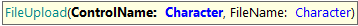
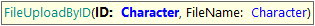
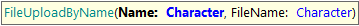
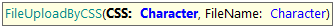
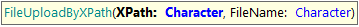
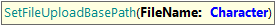

These commands family allows interacting with upload file controls, check the Fileupload examples. Note that they can be combined with File Upload Base Path property usage. FileUpload Allows uploading a file for a control present on the page. Parameters:
Example:
&driver.FileUpload("&blobVar", "pathToFile/fileName.extension")
Also, four HTML selectors are available for this command: ID, Name, CSS, and XPath. FileUploadByID Allows uploading a file to an input file element using its ID. Parameters:
Example:
&driver.FileUploadByID("fileUploadID", "pathToFile/fileName.extension")
FileUploadByName Allows uploading a file to an input file element using its name attribute. Parameters:
Example:
&driver.FileUploadByName("fileUploadName", "pathToFile/fileName.extension")
FileUploadByCSS Allows uploading a file to an input file element using a CSS selector. Parameters:
Example:
&driver.FileUploadByCSS("#vATTACHEBLOB", "pathToFile/fileName.extension")
FileUploadByXPath Allows uploading a file to an input file element using an XPath selector. Parameters:
Example:
&driver.FileUploadByXPath("//*[@id='vATTACHEBLOB']", "pathToFile/fileName.extension")
Additionally, with this new commands, there is another new command useful to set a base folder where GXtest will use to select files in case you want to use only file names or relative paths in your FileUploadBy commands. SetFileUploadBasePath Goal: to set a default base directory where FileUpload commands will be looking at files for upload when a relative path is used as FileName parameter. Parameters:
Example:
&driver.SetFileUploadBasePath("C:\\testingFiles\\")
&driver.FileUploadByName("fileUploadName", "fileName.extension")
Notes: - File upload base path is set automatically through its corresponding environment level property but also you can use this command for a specific test. - "File Upload Base Path" property, "SetFileUploadBasePath" and "FileUploadBy" commands does not validate if the path set is valid. For this, it is necessary to carry out validations (Assertions, GetValue, Verify, Contains, EndsWith, etc.) to verify that the file uploaded correctly or not. For Example:
&driver.FileUploadByName("fileUploadVar", "C:\testingResources\userForm.pdf")
if (&driver.GetValueByName("fileUploadVar").EndsWith("userForm.pdf"))
// File loaded successfully
else
// File not loaded
endif
|